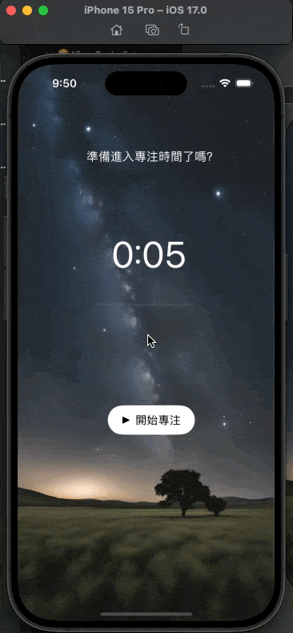

<!DOCTYPE html>
<html lang="zh-tw">
  <head>
    
    <script type="application/ld+json">

{
  "@context": "https://schema.org",
  "@type": "BlogPosting",
  "headline": "番茄鐘 – 專注草原｜Timer, Player",
  
  "image": "https://kylelu.com/images/K.Lu-231009.avif",
  
  "datePublished": "2023-10-09T04:52:22Z",
  "dateModified": "2023-10-09T04:52:22Z",
  "author": {
    "@type": "Person",
    "name":  null ,
    
  },
  "mainEntityOfPage": { 
    "@type": "WebPage",
    "@id": "https:\/\/kylelu.com\/2023\/10\/09\/pomodoro-timer-focus-on-wild\/" 
  },
  "publisher": {
    "@type": "Organization",
    "name": "凱爾鹿數位生活",
    
  },
  "description": "一款簡約的番茄鐘 APP，讓你在令人心曠神怡的專注草原上，每次前進一小步，並在蟲鳴鳥叫聲中小憩片刻。\n",
  "keywords": []
}

</script>
    <meta charset="UTF-8">
<meta name="viewport" content="width=device-width, initial-scale=1">
<meta http-equiv="X-UA-Compatible" content="IE=edge">
<meta name="generator" content="Hugo 0.120.4 with theme Tranquilpeak 0.5.3-BETA">
<meta name="author" content="">
<meta name="keywords" content="">
<meta name="description" content="一款簡約的番茄鐘 APP，讓你在令人心曠神怡的專注草原上，每次前進一小步，並在蟲鳴鳥叫聲中小憩片刻。">


<meta property="og:description" content="一款簡約的番茄鐘 APP，讓你在令人心曠神怡的專注草原上，每次前進一小步，並在蟲鳴鳥叫聲中小憩片刻。">
<meta property="og:type" content="article">
<meta property="og:title" content="番茄鐘 – 專注草原｜Timer, Player">
<meta name="twitter:title" content="番茄鐘 – 專注草原｜Timer, Player">
<meta property="og:url" content="https://kylelu.com/2023/10/09/pomodoro-timer-focus-on-wild/">
<meta property="twitter:url" content="https://kylelu.com/2023/10/09/pomodoro-timer-focus-on-wild/">
<meta property="og:site_name" content="凱爾鹿數位生活">
<meta property="og:description" content="一款簡約的番茄鐘 APP，讓你在令人心曠神怡的專注草原上，每次前進一小步，並在蟲鳴鳥叫聲中小憩片刻。">
<meta name="twitter:description" content="一款簡約的番茄鐘 APP，讓你在令人心曠神怡的專注草原上，每次前進一小步，並在蟲鳴鳥叫聲中小憩片刻。">
<meta property="og:locale" content="zh-tw">

  
    <meta property="article:published_time" content="2023-10-09T04:52:22">
  
  
    <meta property="article:modified_time" content="2023-10-09T04:52:22">
  
  
  
    
      <meta property="article:section" content="Swift 學習筆記">
    
      <meta property="article:section" content="作品">
    
  
  
    
      <meta property="article:tag" content="player">
    
      <meta property="article:tag" content="pomodoro">
    
      <meta property="article:tag" content="swift">
    
      <meta property="article:tag" content="timer">
    
  


<meta name="twitter:card" content="summary">


  <meta property="og:image" content="https://kylelu.com/images/K.Lu-231009.avif">
  <meta property="twitter:image" content="https://kylelu.com/images/K.Lu-231009.avif">


    <title>番茄鐘 – 專注草原｜Timer, Player</title>

    <link rel="icon" href="/favicon.png">
    

    

    <link rel="canonical" href="https://kylelu.com/2023/10/09/pomodoro-timer-focus-on-wild/">

    
    <link rel="stylesheet" href="https://cdnjs.cloudflare.com/ajax/libs/font-awesome/5.15.3/css/all.min.css" integrity="sha512-iBBXm8fW90+nuLcSKlbmrPcLa0OT92xO1BIsZ+ywDWZCvqsWgccV3gFoRBv0z+8dLJgyAHIhR35VZc2oM/gI1w==" crossorigin="anonymous" referrerpolicy="no-referrer" />
    <link rel="stylesheet" href="https://cdnjs.cloudflare.com/ajax/libs/fancybox/3.5.7/jquery.fancybox.min.css" integrity="sha512-H9jrZiiopUdsLpg94A333EfumgUBpO9MdbxStdeITo+KEIMaNfHNvwyjjDJb+ERPaRS6DpyRlKbvPUasNItRyw==" crossorigin="anonymous" referrerpolicy="no-referrer" />
    
    
    
    <link rel="stylesheet" href="https://kylelu.com/css/style-h6ccsoet3mzkbb0wngshlfbaweimexgqcxj0h5hu4h82olsdzz6wmqdkajm.min.css" />
    
    

    
      
<script async src="https://www.googletagmanager.com/gtag/js?id=G-GQP7Q11D2F"></script>
<script>
var doNotTrack = false;
if (!doNotTrack) {
	window.dataLayer = window.dataLayer || [];
	function gtag(){dataLayer.push(arguments);}
	gtag('js', new Date());
	gtag('config', 'G-GQP7Q11D2F', { 'anonymize_ip': false });
}
</script>

    
    
  </head>

  <body>
    <div id="blog">
      <header id="header" data-behavior="5">
  <i id="btn-open-sidebar" class="fa fa-lg fa-bars"></i>
  <div class="header-title">
    <a class="header-title-link" href="/" aria-label="去首頁">凱爾鹿數位生活</a>
  </div>
  
    
      <a class="header-right-picture "
         href="/#about" aria-label="打開鏈接: /#about">
    
    
    
      
    
    </a>
  
</header>

      
<script async src="https://www.googletagmanager.com/gtag/js?id=G-GQP7Q11D2F"></script>
<script>
var doNotTrack = false;
if (!doNotTrack) {
	window.dataLayer = window.dataLayer || [];
	function gtag(){dataLayer.push(arguments);}
	gtag('js', new Date());
	gtag('config', 'G-GQP7Q11D2F', { 'anonymize_ip': false });
}
</script>

      <nav id="sidebar" data-behavior="5">
  <div class="sidebar-container">
    
    <ul class="sidebar-buttons">
      
  <li class="sidebar-button">
    
      <a class="sidebar-button-link " href="/" title="Home">
    
      <i class="sidebar-button-icon fas fa-lg fa-home" aria-hidden="true"></i>
      
      <span class="sidebar-button-desc">首頁</span>
    </a>
  </li>

  <li class="sidebar-button">
    
      <a class="sidebar-button-link " href="/categories" title="Categories">
    
      <i class="sidebar-button-icon fas fa-lg fa-bookmark" aria-hidden="true"></i>
      
      <span class="sidebar-button-desc">分類</span>
    </a>
  </li>

  <li class="sidebar-button">
    
      <a class="sidebar-button-link " href="/tags" title="Tags">
    
      <i class="sidebar-button-icon fas fa-lg fa-tags" aria-hidden="true"></i>
      
      <span class="sidebar-button-desc">標籤</span>
    </a>
  </li>

  <li class="sidebar-button">
    
      <a class="sidebar-button-link " href="/archives" title="Archives">
    
      <i class="sidebar-button-icon fas fa-lg fa-archive" aria-hidden="true"></i>
      
      <span class="sidebar-button-desc">所有文章</span>
    </a>
  </li>

  <li class="sidebar-button">
    
      <a class="sidebar-button-link " href="/about_me" title="About">
    
      <i class="sidebar-button-icon fas fa-lg fa-question" aria-hidden="true"></i>
      
      <span class="sidebar-button-desc">關於</span>
    </a>
  </li>

  <li class="sidebar-button">
    
      <a class="sidebar-button-link " href="https://github.com/kkylelu" target="_blank" rel="noopener" title="GitHub">
    
      <i class="sidebar-button-icon fab fa-lg fa-github" aria-hidden="true"></i>
      
      <span class="sidebar-button-desc">GitHub</span>
    </a>
  </li>

  <li class="sidebar-button">
    
      <a class="sidebar-button-link " href="mailto:hi@kylelu.com" target="_blank" rel="noopener" title="Email">
    
      <i class="sidebar-button-icon fa fa-envelope" aria-hidden="true"></i>
      
      <span class="sidebar-button-desc">Email</span>
    </a>
  </li>


    </ul>
    <ul class="sidebar-buttons">
      

    </ul>
    <ul class="sidebar-buttons">
      
  <li class="sidebar-button">
    
      <a class="sidebar-button-link " href="/index.xml" title="RSS">
    
      <i class="sidebar-button-icon fas fa-lg fa-rss" aria-hidden="true"></i>
      
      <span class="sidebar-button-desc">Atom</span>
    </a>
  </li>


    </ul>
  </div>
</nav>

      

      <div id="main" data-behavior="5"
        class="
               hasCoverMetaIn
               ">
        <article class="post" id="top">
          
          
            <div class="post-header main-content-wrap text-left">
  
    <h1 class="post-title">
      番茄鐘 – 專注草原｜Timer, Player
    </h1>
  
  
  <div class="postShorten-meta post-meta">
    
      <time datetime="2023-10-09T04:52:22Z">
        
  十月 9, 2023

      </time>
    
    
  
  
    <span>分類</span>
    
      <a class="category-link" href="/categories/swift-%e5%ad%b8%e7%bf%92%e7%ad%86%e8%a8%98">Swift 學習筆記</a>, 
    
      <a class="category-link" href="/categories/%e4%bd%9c%e5%93%81">作品</a>
    
  

  </div>

</div>
          
          <div class="post-content markdown">
            <div class="main-content-wrap">
              <p>一款簡約的番茄鐘 APP，讓你在令人心曠神怡的專注草原上，每次前進一小步，並在蟲鳴鳥叫聲中小憩片刻。</p>
<p></p>
<h1 id="table-of-contents">目錄</h1>
<nav id="TableOfContents">
  <ul>
    <li><a href="#作品介紹">作品介紹</a></li>
    <li><a href="#學習目標">學習目標</a></li>
    <li><a href="#練習方向">練習方向</a></li>
    <li><a href="#練習步驟">練習步驟</a>
      <ul>
        <li><a href="#step-1-建立-ui"><strong>Step 1: 建立 UI</strong></a></li>
        <li><a href="#step-2-寫-swift-code"><strong>Step 2: 寫 Swift Code</strong></a></li>
        <li><a href="#a-控制番茄鐘的開始和暫停">A. 控制番茄鐘的開始和暫停</a></li>
        <li><a href="#b-開始計時">B. 開始計時</a></li>
        <li><a href="#c-更新ui">C. 更新UI</a></li>
        <li><a href="#d-停止計時">D. 停止計時</a></li>
        <li><a href="#step-3-測試與優化">Step 3: 測試與優化</a></li>
      </ul>
    </li>
    <li><a href="#參考資料">參考資料</a></li>
  </ul>
</nav>

<h2 class="wp-block-heading" id="作品介紹">作品介紹</h2>
<p>一款簡約的番茄鐘 APP，讓你在令人心曠神怡的專注草原上，每次前進一小步，並在蟲鳴鳥叫聲中小憩片刻。
</p>
<h2 class="wp-block-heading" id="學習目標">學習目標</h2>
<ol>
<li>倒數計時：Timer</li>
<li>進度條控制：progressBar</li>
<li>音檔播放：AVAudioPlayer</li>
</ol>
<!-- raw HTML omitted -->
<h2 class="wp-block-heading" id="練習方向">練習方向</h2>
<ol>
<li>設計版面 UI 元素</li>
<li>用 IBOutlet 設計 UI 介面</li>
<li>加入程式碼</li>
<li>測試與優化</li>
</ol>
<!-- raw HTML omitted -->
<h2 class="wp-block-heading" id="練習步驟">練習步驟</h2>
<h3 class="wp-block-heading" id="step-1-建立-ui"><strong>Step 1: 建立 UI</strong></h3>
<p>首先，用 Xcode 的 Storyboard 來設計專注草原。</p>
<div class="highlight"><pre tabindex="0" style="color:#f8f8f2;background-color:#272822;-moz-tab-size:4;-o-tab-size:4;tab-size:4;"><code class="language-swift" data-lang="swift"><span style="display:flex;"><span><span style="color:#66d9ef">@IBOutlet</span> <span style="color:#66d9ef">weak</span> <span style="color:#66d9ef">var</span> textLabel: UILabel!
</span></span><span style="display:flex;"><span><span style="color:#66d9ef">@IBOutlet</span> <span style="color:#66d9ef">weak</span> <span style="color:#66d9ef">var</span> countdownLabel: UILabel!
</span></span><span style="display:flex;"><span><span style="color:#66d9ef">@IBOutlet</span> <span style="color:#66d9ef">weak</span> <span style="color:#66d9ef">var</span> progressBar: UIProgressView!
</span></span><span style="display:flex;"><span><span style="color:#66d9ef">@IBOutlet</span> <span style="color:#66d9ef">weak</span> <span style="color:#66d9ef">var</span> controlButton: UIButton!
</span></span></code></pre></div><h3 class="wp-block-heading" id="step-2-寫-swift-code"><strong>Step 2: 寫 Swift Code</strong></h3>
<ol>
<li>連接 UI 元件到 ViewController。</li>
<li>宣告變數。</li>
</ol>
<div class="highlight"><pre tabindex="0" style="color:#f8f8f2;background-color:#272822;-moz-tab-size:4;-o-tab-size:4;tab-size:4;"><code class="language-swift" data-lang="swift"><span style="display:flex;"><span><span style="color:#66d9ef">var</span> timer: Timer? <span style="color:#75715e">// 計時器</span>
</span></span><span style="display:flex;"><span><span style="color:#66d9ef">var</span> secondsRemaining = <span style="color:#ae81ff">5</span> <span style="color:#75715e">// 總秒數 25 分鐘 x 60 秒 = 1500 秒，為了方便測試先用 5 秒</span>
</span></span><span style="display:flex;"><span><span style="color:#66d9ef">let</span> totalSeconds = <span style="color:#ae81ff">5</span> <span style="color:#75715e">// 計算進度條的總秒數</span>
</span></span><span style="display:flex;"><span><span style="color:#66d9ef">var</span> player: AVAudioPlayer!
</span></span></code></pre></div><h3 class="wp-block-heading" id="a-控制番茄鐘的開始和暫停">A. 控制番茄鐘的開始和暫停</h3>
<p>番茄鐘會有 3 種狀態以及對應的按鈕文字</p>
<ol>
<li>全新狀態｜尚未開始：開始專注</li>
<li>進行狀態｜倒數中：停止</li>
<li>預設狀態｜倒數完成：重新開始</li>
</ol>
<p><strong>尚未開始</strong></p>
<ul>
<li>這是當 <code>timer</code> 是 nil（番茄鐘沒有啟動）且 <code>secondsRemaining</code> 是0（時間還沒開始倒數）的時候。</li>
<li>按鈕文字為：「開始專注」</li>
</ul>
<p><strong>倒數中</strong></p>
<ul>
<li>當 <code>timer</code> 是 nil（番茄鐘沒有啟動）但 <code>secondsRemaining</code> 不是0（還有一些時間剩下）時，表示番茄鐘正在倒數，可以隨時暫停。</li>
<li>按鈕文字為：「停止」</li>
</ul>
<p><strong>倒數完成</strong></p>
<p>倒數完成功能是在最後測試優化階段的時候加上的，發現只有開始和停止的話，番茄鐘跑完就跑完了，沒辦法歸零重啟，因此在判斷式最後加上「重新開始」功能。</p>
<ul>
<li>當 <code>timer</code> 不是 nil（番茄鐘有被開啟）的時候，就出現預設文字。</li>
<li>按鈕文字為：「重新開始」</li>
</ul>
<!-- raw HTML omitted -->
<p><strong>ChatGPT 說明關於 for: .normal :</strong></p>
<blockquote>
<p>在UIKit中，<!-- raw HTML omitted -->for: .normal<!-- raw HTML omitted --> 是用於設定 UIButton 的特定狀態。<!-- raw HTML omitted -->UIButton 有多種不同的狀態，例如：</p>
</blockquote>
<!-- raw HTML omitted -->
<!-- raw HTML omitted -->
<div class="highlight"><pre tabindex="0" style="color:#f8f8f2;background-color:#272822;-moz-tab-size:4;-o-tab-size:4;tab-size:4;"><code class="language-swift" data-lang="swift"><span style="display:flex;"><span><span style="color:#66d9ef">@IBAction</span> <span style="color:#66d9ef">func</span> <span style="color:#a6e22e">controlButtonPressed</span>(<span style="color:#66d9ef">_</span> sender: UIButton) {
</span></span><span style="display:flex;"><span>    <span style="color:#66d9ef">if</span> timer == <span style="color:#66d9ef">nil</span> { <span style="color:#75715e">// 檢查 timer 變數如果是 nil，表示計時器目前沒有開始或已被停止。</span>
</span></span><span style="display:flex;"><span>        <span style="color:#66d9ef">if</span> secondsRemaining == <span style="color:#ae81ff">0</span> {
</span></span><span style="display:flex;"><span>          <span style="color:#75715e">// Reset the timer to the default value</span>
</span></span><span style="display:flex;"><span>            secondsRemaining = totalSeconds
</span></span><span style="display:flex;"><span>            updateUI()
</span></span><span style="display:flex;"><span>            controlButton.setTitle(<span style="color:#e6db74">&#34;開始專注&#34;</span>, <span style="color:#66d9ef">for</span>: .normal)
</span></span><span style="display:flex;"><span>        } <span style="color:#66d9ef">else</span> {
</span></span><span style="display:flex;"><span>            startTimer()
</span></span><span style="display:flex;"><span>            controlButton.setTitle(<span style="color:#e6db74">&#34;停止&#34;</span>, <span style="color:#66d9ef">for</span>: .normal)
</span></span><span style="display:flex;"><span>        }
</span></span><span style="display:flex;"><span>    } <span style="color:#66d9ef">else</span> {
</span></span><span style="display:flex;"><span>        stopTimer()
</span></span><span style="display:flex;"><span>        controlButton.setTitle(<span style="color:#e6db74">&#34;重新開始&#34;</span>, <span style="color:#66d9ef">for</span>: .normal)
</span></span><span style="display:flex;"><span>    }
</span></span><span style="display:flex;"><span>}
</span></span></code></pre></div><p>要設定下方倒數按鈕的 function 需要拖拉按鈕</p>
<div class="highlight"><pre tabindex="0" style="color:#f8f8f2;background-color:#272822;-moz-tab-size:4;-o-tab-size:4;tab-size:4;"><code class="language-swift" data-lang="swift"><span style="display:flex;"><span><span style="color:#66d9ef">@IBAction</span> <span style="color:#66d9ef">func</span> <span style="color:#a6e22e">controlButtonPressed</span>(<span style="color:#66d9ef">_</span> sender: UIButton) 
</span></span></code></pre></div><p>
<em>點擊 button，從右側Connection Inspector找到Touch Up Inside</em></p>
<p>點擊 button 後，在右側形狀像圓圈中帶有右箭頭的 icon “Connection Inspector” 找到 “Touch Up Inside”，拖拉到 veiewController 這邊<!-- raw HTML omitted --></p>
<p>
<em>命名 controlButtonPressed 並且設定 type 為 UIbutton</em></p>
<!-- raw HTML omitted -->
<h3 class="wp-block-heading" id="b-開始計時">B. 開始計時</h3>
<p>用<code>startTimer()</code> 函數啟動一個計時器，每秒減少 <code>secondsRemaining</code> 的值並更新UI，直到時間完全倒數完畢。</p>
<p>使用 <code>Timer</code> 類別的 <code>scheduledTimer</code> 方法來建立一個計時器。</p>
<p>這個計時器每一秒 ( <code>withTimeInterval: 1</code> ) 就會觸發一次，因為 <code>repeats</code> 設定為 <code>true</code>。</p>
<p>這裡用判斷式，檢查時間倒數完了沒？</p>
<ul>
<li>如果還有剩餘時間，那每次計時器觸發，就將 <code>secondsRemaining</code> 減 1，代表時間過去了一秒。</li>
<li>倒數過程，呼叫 <code>updateUI()</code> 函數來更新 UI 介面，顯示新的剩餘時間並更新進度條。</li>
<li>如果 <code>secondsRemaining</code> 不大於 0（時間已經倒數完畢），則標題文字為「時間到！」。</li>
</ul>
<!-- raw HTML omitted -->
<p><strong>ChatGPT 說明關於 self :</strong></p>
<blockquote>
<p>在 Swift 中，<!-- raw HTML omitted -->self<!-- raw HTML omitted --> 是一個特殊的關鍵字，用於指代當前的實例或物件。使用 <!-- raw HTML omitted -->self<!-- raw HTML omitted --> 可以區分屬性或方法與局部變數之間的名稱衝突，並明確指示我們正在存取或修改的是物件的屬性還是方法。
在您提供的 <!-- raw HTML omitted -->startTimer()<!-- raw HTML omitted --> 函數中，我們在閉包 (closure) 或區塊 (block) 內部存取或修改物件的屬性或方法，這時通常需要明確使用 <!-- raw HTML omitted -->self<!-- raw HTML omitted --> 來指代當前的實例。</p>
</blockquote>
<div class="highlight"><pre tabindex="0" style="color:#f8f8f2;background-color:#272822;-moz-tab-size:4;-o-tab-size:4;tab-size:4;"><code class="language-swift" data-lang="swift"><span style="display:flex;"><span><span style="color:#66d9ef">func</span> <span style="color:#a6e22e">startTimer</span>(){
</span></span><span style="display:flex;"><span>    timer = Timer.scheduledTimer(withTimeInterval: <span style="color:#ae81ff">1</span>, repeats: <span style="color:#66d9ef">true</span>, block: { timer <span style="color:#66d9ef">in</span>
</span></span><span style="display:flex;"><span>        <span style="color:#66d9ef">if</span> <span style="color:#66d9ef">self</span>.secondsRemaining <span style="color:#f92672">&gt;</span> <span style="color:#ae81ff">0</span> { <span style="color:#75715e">//檢查 secondsRemaining 是否大於 0。如果是，代表還有時間尚未倒數完畢。</span>
</span></span><span style="display:flex;"><span>            <span style="color:#66d9ef">self</span>.secondsRemaining <span style="color:#f92672">-=</span> <span style="color:#ae81ff">1</span> 
</span></span><span style="display:flex;"><span>            <span style="color:#66d9ef">self</span>.updateUI()
</span></span><span style="display:flex;"><span>        } <span style="color:#66d9ef">else</span> {
</span></span><span style="display:flex;"><span>            <span style="color:#66d9ef">self</span>.textLabel.text = <span style="color:#e6db74">&#34;時間到！&#34;</span>
</span></span><span style="display:flex;"><span>            <span style="color:#66d9ef">self</span>.playSound()
</span></span><span style="display:flex;"><span>            <span style="color:#66d9ef">self</span>.stopTimer()
</span></span><span style="display:flex;"><span>        }
</span></span><span style="display:flex;"><span>    })
</span></span><span style="display:flex;"><span>}
</span></span></code></pre></div><p>更新 UI 設定更新 UI 的 function，更新用戶界面，讓它反映目前的倒數時間和進度。 根據目前剩餘的秒數（<code>secondsRemaining</code>）來更新倒數標籤的文本和進度條的進度。</p>
<!-- raw HTML omitted -->
<h3 class="wp-block-heading" id="c-更新ui">C. 更新UI</h3>
<p>以下分為兩個部分：<code>countdownLabel</code> 和 <code>progressBar</code></p>
<p>將 <code>countdownLabel</code> 的文本設定為 MM:SS 的格式，例如 “02:05″。</p>
<div class="highlight"><pre tabindex="0" style="color:#f8f8f2;background-color:#272822;-moz-tab-size:4;-o-tab-size:4;tab-size:4;"><code class="language-swift" data-lang="swift"><span style="display:flex;"><span>countdownLabel.text = <span style="color:#e6db74">&#34;</span><span style="color:#e6db74">\(</span>secondsRemaining <span style="color:#f92672">/</span> <span style="color:#ae81ff">60</span><span style="color:#e6db74">)</span><span style="color:#e6db74">:</span><span style="color:#e6db74">\(</span>String<span style="color:#e6db74">(</span>format: <span style="color:#e6db74">&#34;%02d&#34;</span>, secondsRemaining <span style="color:#f92672">%</span> <span style="color:#ae81ff">60</span><span style="color:#e6db74">))</span><span style="color:#e6db74">&#34;</span>
</span></span></code></pre></div><ol>
<li><code>countdownLabel.text</code>：這裡設定 <code>countdownLabel</code>（一個 UILabel）的文本屬性，以顯示倒數時間。</li>
<li><code>&quot;\(secondsRemaining / 60)&quot;</code>：這部分計算剩餘的分鐘數。例如，如果 <code>secondsRemaining</code> 是 125，那麼 125 除以 60 等於 2，表示還剩下 2 分鐘。</li>
<li><code>&quot;\(String(format: &quot;%02d&quot;, secondsRemaining % 60))&quot;</code>：這部分計算剩餘的秒數，並格式化為兩位數。<br>
<code>%02d</code> 是一個格式化字符串，表示如果秒數小於 10（例如 9），它會顯示為 09。<br>
使用 <code>%</code> 取得 <code>secondsRemaining</code> 的餘數是為了得到秒數，例如 125 秒 % 60 = 5 秒。</li>
</ol>
<p>接著是設定 <code>progressBar</code> 的 progress 屬性，用 <code>progressBar.progress</code> 呈現進度條的完成程度。</p>
<div class="highlight"><pre tabindex="0" style="color:#f8f8f2;background-color:#272822;-moz-tab-size:4;-o-tab-size:4;tab-size:4;"><code class="language-swift" data-lang="swift"><span style="display:flex;"><span>progressBar.progress = <span style="color:#ae81ff">1.0</span> <span style="color:#f92672">-</span> Float(secondsRemaining) <span style="color:#f92672">/</span> Float(totalSeconds)
</span></span></code></pre></div><ol>
<li><code>Float(secondsRemaining) / Float(totalSeconds)</code>：這部分計算的是已經過去的時間所佔的比例。如果總時間（<code>totalSeconds</code>）是 1500 秒，並且還剩下 750 秒（<code>secondsRemaining</code>），那這個比例就是 0.5。</li>
<li><code>1.0 - ...</code>：由於我們想要了解倒數的進度，所以我們將 1 減去上述的比例，這樣當時間開始時，進度條會是 0，而當時間結束時，進度條會是 1（或 100%）。</li>
</ol>
<div class="highlight"><pre tabindex="0" style="color:#f8f8f2;background-color:#272822;-moz-tab-size:4;-o-tab-size:4;tab-size:4;"><code class="language-swift" data-lang="swift"><span style="display:flex;"><span><span style="color:#66d9ef">func</span> <span style="color:#a6e22e">updateUI</span>() {
</span></span><span style="display:flex;"><span>    countdownLabel.text = <span style="color:#e6db74">&#34;</span><span style="color:#e6db74">\(</span>secondsRemaining <span style="color:#f92672">/</span> <span style="color:#ae81ff">60</span><span style="color:#e6db74">)</span><span style="color:#e6db74">:</span><span style="color:#e6db74">\(</span>String<span style="color:#e6db74">(</span>format: <span style="color:#e6db74">&#34;%02d&#34;</span>, secondsRemaining <span style="color:#f92672">%</span> <span style="color:#ae81ff">60</span><span style="color:#e6db74">))</span><span style="color:#e6db74">&#34;</span>
</span></span><span style="display:flex;"><span>    progressBar.progress = <span style="color:#ae81ff">1.0</span> <span style="color:#f92672">-</span> Float(secondsRemaining) <span style="color:#f92672">/</span> Float(totalSeconds)
</span></span><span style="display:flex;"><span>}
</span></span></code></pre></div><!-- raw HTML omitted -->
<h3 class="wp-block-heading" id="d-停止計時">D. 停止計時</h3>
<div class="highlight"><pre tabindex="0" style="color:#f8f8f2;background-color:#272822;-moz-tab-size:4;-o-tab-size:4;tab-size:4;"><code class="language-swift" data-lang="swift"><span style="display:flex;"><span><span style="color:#66d9ef">func</span> <span style="color:#a6e22e">stopTimer</span>() {
</span></span><span style="display:flex;"><span>    timer?.invalidate()
</span></span><span style="display:flex;"><span>    timer = <span style="color:#66d9ef">nil</span>
</span></span><span style="display:flex;"><span>}
</span></span></code></pre></div><!-- raw HTML omitted -->
<h3 class="wp-block-heading" id="step-3-測試與優化">Step 3: 測試與優化</h3>
<ol>
<li>倒數計時歸零後，應該要可以重新開始計時 可以參考 Step 2</li>
<li>關於增加聲音，原本一開始是用 ! 強制展開，結果 APP 只要遇到播音檔就閃退</li>
</ol>
<div class="highlight"><pre tabindex="0" style="color:#f8f8f2;background-color:#272822;-moz-tab-size:4;-o-tab-size:4;tab-size:4;"><code class="language-swift" data-lang="swift"><span style="display:flex;"><span><span style="color:#66d9ef">func</span> <span style="color:#a6e22e">playSound</span>() {
</span></span><span style="display:flex;"><span>    <span style="color:#66d9ef">let</span> url = Bundle.main.url(forResource: <span style="color:#e6db74">&#34;nature-soundstropicaljunglebirds&#34;</span>, withExtension: <span style="color:#e6db74">&#34;mp3&#34;</span>)
</span></span><span style="display:flex;"><span>    player = <span style="color:#66d9ef">try</span>! AVAudioPlayer(contentsOf: url!)
</span></span><span style="display:flex;"><span>    player.play()
</span></span><span style="display:flex;"><span>}
</span></span></code></pre></div><p>根據 ChatGPT 的建議，改成以下判斷式之後，才避免閃退，並發現問題在「未找到音檔」！</p>
<div class="highlight"><pre tabindex="0" style="color:#f8f8f2;background-color:#272822;-moz-tab-size:4;-o-tab-size:4;tab-size:4;"><code class="language-swift" data-lang="swift"><span style="display:flex;"><span><span style="color:#66d9ef">func</span> <span style="color:#a6e22e">playSound</span>() {
</span></span><span style="display:flex;"><span>    <span style="color:#66d9ef">if</span> <span style="color:#66d9ef">let</span> url = Bundle.main.url(forResource: <span style="color:#e6db74">&#34;nature-soundstropicaljunglebirds&#34;</span>, withExtension: <span style="color:#e6db74">&#34;mp3&#34;</span>) {
</span></span><span style="display:flex;"><span>        <span style="color:#66d9ef">do</span> {
</span></span><span style="display:flex;"><span>            player = <span style="color:#66d9ef">try</span> AVAudioPlayer(contentsOf: url)
</span></span><span style="display:flex;"><span>            player.play()
</span></span><span style="display:flex;"><span>        } <span style="color:#66d9ef">catch</span> {
</span></span><span style="display:flex;"><span>            print(<span style="color:#e6db74">&#34;音檔播放錯誤: </span><span style="color:#e6db74">\(</span>error.localizedDescription<span style="color:#e6db74">)</span><span style="color:#e6db74">&#34;</span>)
</span></span><span style="display:flex;"><span>        }
</span></span><span style="display:flex;"><span>    } <span style="color:#66d9ef">else</span> {
</span></span><span style="display:flex;"><span>        print(<span style="color:#e6db74">&#34;未找到音檔&#34;</span>)
</span></span><span style="display:flex;"><span>    }
</span></span><span style="display:flex;"><span>}
</span></span></code></pre></div><p>檢查 “Build Phases” ，展開 “Copy Bundle Resources“，發現沒有 mp3 音檔</p>
<p>才發現原來是我沒有把音檔正確拖曳到專案導覽器（Project Navigator）。</p>
<p>音檔有放進 assets 資料夾，但不是放進跟 viewcontroller 同一層資料夾，因此抓不到。我直接將 mp3 檔拖曳到 viewcontroller 同一層資料夾，問題就解決了！</p>
<p>一拖曳過去，果然就可以正常播放音檔了～</p>
<p>
<div style="position: relative; padding-bottom: 56.25%; height: 0; overflow: hidden;">
  <iframe src="https://www.youtube.com/embed/HfnBqqb5oiM" style="position: absolute; top: 0; left: 0; width: 100%; height: 100%; border:0;" allowfullscreen title="YouTube Video"></iframe>
</div>

<em>影片 00:12 處開始播放聲音</em></p>
<!-- raw HTML omitted -->
<p>這次經驗，讓我學習到：</p>
<ol>
<li>如果之後遇到 APP 會閃退，那可以將 code 改為可以印出「問題狀況」的形式，觀察問題點在哪裡，再對症下藥。</li>
<li>Timer 和 progressBar 需要考慮不同的倒數狀態、總秒數和剩餘秒數的轉換。</li>
<li>音檔需要放在跟 ViewController 同一層資料夾。</li>
<li>對 self 、 UIbutton .normal 的實際應用還需要再了解。</li>
</ol>
<!-- raw HTML omitted -->
<h2 class="wp-block-heading" id="參考資料">參考資料</h2>
<ul>
<li><a href="https://www.udemy.com/course/ios-13-app-development-bootcamp/">iOS &amp; Swift – The Complete iOS App Development Bootcamp</a>： Ch 8</li>
<li><a href="https://medium.com/ios-os-x-development/build-an-stopwatch-with-swift-3-0-c7040818a10f">Build a count down timer with Swift 3.0 | by Jen Sipila | iOS App Development | Medium</a></li>
<li><a href="https://medium.com/%E5%BD%BC%E5%BE%97%E6%BD%98%E7%9A%84-swift-ios-app-%E9%96%8B%E7%99%BC%E5%95%8F%E9%A1%8C%E8%A7%A3%E7%AD%94%E9%9B%86/%E5%A6%82%E4%BD%95%E5%B0%87-ios-app-%E4%BD%9C%E6%A5%AD%E4%B8%8A%E5%82%B3%E5%88%B0-github-135416069dfd">Xcode 排除錯誤訊息</a></li>
<li>Github 作品連結：<a href="https://github.com/kkylelu/Pomodoro-Timer">kkylelu/Pomodoro-Timer</a></li>
</ul>
              


            </div>
          </div>
          <div id="post-footer" class="post-footer main-content-wrap">
            
              
                
                
                  <div class="post-footer-tags">
                    <span class="text-color-light text-small">標籤</span><br/>
                    
  <a class="tag tag--primary tag--small" href="/tags/player/">player</a>

  <a class="tag tag--primary tag--small" href="/tags/pomodoro/">pomodoro</a>

  <a class="tag tag--primary tag--small" href="/tags/swift/">swift</a>

  <a class="tag tag--primary tag--small" href="/tags/timer/">timer</a>

                  </div>
                
              
            
            
<div class="post-actions-wrap">
  <nav >
    <ul class="post-actions post-action-nav">
      
        <li class="post-action">
          
            <a class="post-action-btn btn btn--default tooltip--top" href="/2023/10/16/why-github-contributions-green-dot-not-showing/" data-tooltip="為什麼我的 GitHub 小綠點（貢獻值 contributions）沒出現？" aria-label="下一篇: 為什麼我的 GitHub 小綠點（貢獻值 contributions）沒出現？">
          
              <i class="fa fa-angle-left"></i>
              <span class="hide-xs hide-sm text-small icon-ml">下一篇</span>
            </a>
        </li>
        <li class="post-action">
          
            <a class="post-action-btn btn btn--default tooltip--top" href="/2023/09/09/how-to-copy-title-and-url-in-arc-browser-using-markdown/" data-tooltip="如何在 Arc 瀏覽器同時複製網頁標題和網址｜Copy as Markdown" aria-label="上一篇: 如何在 Arc 瀏覽器同時複製網頁標題和網址｜Copy as Markdown">
          
              <span class="hide-xs hide-sm text-small icon-mr">上一篇</span>
              <i class="fa fa-angle-right"></i>
            </a>
        </li>
      
    </ul>
  </nav>
<ul class="post-actions post-action-share" >
  
    <li class="post-action hide-lg hide-md hide-sm">
      <a class="post-action-btn btn btn--default btn-open-shareoptions" href="#btn-open-shareoptions" aria-label="分享這個帖子">
        <i class="fa fa-share-alt" aria-hidden="true"></i>
      </a>
    </li>
    
      <li class="post-action hide-xs">
        <a class="post-action-btn btn btn--default" target="new" href="https://social-plugins.line.me/lineit/share?url=https://kylelu.com/2023/10/09/pomodoro-timer-focus-on-wild/" title="分享到 Line" aria-label="分享到 Line">
          <i class="fab fa-line" aria-hidden="true"></i>
        </a>
      </li>
    
      <li class="post-action hide-xs">
        <a class="post-action-btn btn btn--default" target="new" href="https://www.facebook.com/sharer/sharer.php?u=https://kylelu.com/2023/10/09/pomodoro-timer-focus-on-wild/" title="分享到 Facebook" aria-label="分享到 Facebook">
          <i class="fab fa-facebook-square" aria-hidden="true"></i>
        </a>
      </li>
    
      <li class="post-action hide-xs">
        <a class="post-action-btn btn btn--default" target="new" href="https://www.linkedin.com/sharing/share-offsite/?url=https://kylelu.com/2023/10/09/pomodoro-timer-focus-on-wild/" title="分享到 Linkedin" aria-label="分享到 Linkedin">
          <i class="fab fa-linkedin" aria-hidden="true"></i>
        </a>
      </li>
    
      <li class="post-action hide-xs">
        <a class="post-action-btn btn btn--default" target="new" href="https://getpocket.com/edit?url=https://kylelu.com/2023/10/09/pomodoro-timer-focus-on-wild/" title="分享到 Pocket" aria-label="分享到 Pocket">
          <i class="fab fa-get-pocket" aria-hidden="true"></i>
        </a>
      </li>
    
  
  
    <li class="post-action">
      <a class="post-action-btn btn btn--default" href="#disqus_thread" aria-label="發表評論">
        <i class="far fa-comment"></i>
      </a>
    </li>
  
  <li class="post-action">
    
      <a class="post-action-btn btn btn--default" href="#top" aria-label="回到頂部">
      <i class="fa fa-arrow-up" aria-hidden="true"></i>
    
    </a>
  </li>
</ul>
</div>


            
  
    <div id="disqus_thread">
      <noscript>Please enable JavaScript to view the comments powered by Disqus.</noscript>
    </div>
    <script type="text/javascript">
      var disqus_config = function() {
        this.page.url = 'https:\/\/kylelu.com\/2023\/10\/09\/pomodoro-timer-focus-on-wild\/';
        
          this.page.identifier = '\/2023\/10\/09\/pomodoro-timer-focus-on-wild\/'
        
      };
      (function() {
        
        
        if (["localhost", "127.0.0.1"].indexOf(window.location.hostname) != -1) {
          document.getElementById('disqus_thread').innerHTML = 'Disqus comments not available by default when the website is previewed locally.';
          return;
        }
        var dsq = document.createElement('script'); dsq.type = 'text/javascript'; dsq.async = true;
        var disqus_shortname = 'hugo-tranquilpeak-theme';
        dsq.src = '//' + disqus_shortname + '.disqus.com/embed.js';
        (document.getElementsByTagName('head')[0] || document.getElementsByTagName('body')[0]).appendChild(dsq);
      })();
    </script>
  


          </div>
        </article>
        <footer id="footer" class="main-content-wrap">
  <span class="copyrights">
    &copy; 2024 © 2024 Kyle Lu｜凱爾鹿. All Rights Reserved. All Rights Reserved
  </span>
</footer>

      </div>
      <div id="bottom-bar" class="post-bottom-bar" data-behavior="5">
        
<div class="post-actions-wrap">
  <nav >
    <ul class="post-actions post-action-nav">
      
        <li class="post-action">
          
            <a class="post-action-btn btn btn--default tooltip--top" href="/2023/10/16/why-github-contributions-green-dot-not-showing/" data-tooltip="為什麼我的 GitHub 小綠點（貢獻值 contributions）沒出現？" aria-label="下一篇: 為什麼我的 GitHub 小綠點（貢獻值 contributions）沒出現？">
          
              <i class="fa fa-angle-left"></i>
              <span class="hide-xs hide-sm text-small icon-ml">下一篇</span>
            </a>
        </li>
        <li class="post-action">
          
            <a class="post-action-btn btn btn--default tooltip--top" href="/2023/09/09/how-to-copy-title-and-url-in-arc-browser-using-markdown/" data-tooltip="如何在 Arc 瀏覽器同時複製網頁標題和網址｜Copy as Markdown" aria-label="上一篇: 如何在 Arc 瀏覽器同時複製網頁標題和網址｜Copy as Markdown">
          
              <span class="hide-xs hide-sm text-small icon-mr">上一篇</span>
              <i class="fa fa-angle-right"></i>
            </a>
        </li>
      
    </ul>
  </nav>
<ul class="post-actions post-action-share" >
  
    <li class="post-action hide-lg hide-md hide-sm">
      <a class="post-action-btn btn btn--default btn-open-shareoptions" href="#btn-open-shareoptions" aria-label="分享這個帖子">
        <i class="fa fa-share-alt" aria-hidden="true"></i>
      </a>
    </li>
    
      <li class="post-action hide-xs">
        <a class="post-action-btn btn btn--default" target="new" href="https://social-plugins.line.me/lineit/share?url=https://kylelu.com/2023/10/09/pomodoro-timer-focus-on-wild/" title="分享到 Line" aria-label="分享到 Line">
          <i class="fab fa-line" aria-hidden="true"></i>
        </a>
      </li>
    
      <li class="post-action hide-xs">
        <a class="post-action-btn btn btn--default" target="new" href="https://www.facebook.com/sharer/sharer.php?u=https://kylelu.com/2023/10/09/pomodoro-timer-focus-on-wild/" title="分享到 Facebook" aria-label="分享到 Facebook">
          <i class="fab fa-facebook-square" aria-hidden="true"></i>
        </a>
      </li>
    
      <li class="post-action hide-xs">
        <a class="post-action-btn btn btn--default" target="new" href="https://www.linkedin.com/sharing/share-offsite/?url=https://kylelu.com/2023/10/09/pomodoro-timer-focus-on-wild/" title="分享到 Linkedin" aria-label="分享到 Linkedin">
          <i class="fab fa-linkedin" aria-hidden="true"></i>
        </a>
      </li>
    
      <li class="post-action hide-xs">
        <a class="post-action-btn btn btn--default" target="new" href="https://getpocket.com/edit?url=https://kylelu.com/2023/10/09/pomodoro-timer-focus-on-wild/" title="分享到 Pocket" aria-label="分享到 Pocket">
          <i class="fab fa-get-pocket" aria-hidden="true"></i>
        </a>
      </li>
    
  
  
    <li class="post-action">
      <a class="post-action-btn btn btn--default" href="#disqus_thread" aria-label="發表評論">
        <i class="far fa-comment"></i>
      </a>
    </li>
  
  <li class="post-action">
    
      <a class="post-action-btn btn btn--default" href="#top" aria-label="回到頂部">
      <i class="fa fa-arrow-up" aria-hidden="true"></i>
    
    </a>
  </li>
</ul>
</div>


      </div>
      
<div id="share-options-bar" class="share-options-bar" data-behavior="5">
  <i id="btn-close-shareoptions" class="fa fa-times"></i>
  <ul class="share-options">
    
      <li class="share-option">
        <a class="share-option-btn" target="new" href="https://social-plugins.line.me/lineit/share?url=https%3A%2F%2Fkylelu.com%2F2023%2F10%2F09%2Fpomodoro-timer-focus-on-wild%2F" aria-label="分享到 Line">
          <i class="fab fa-line" aria-hidden="true"></i><span>分享到 Line</span>
        </a>
      </li>
    
      <li class="share-option">
        <a class="share-option-btn" target="new" href="https://www.facebook.com/sharer/sharer.php?u=https%3A%2F%2Fkylelu.com%2F2023%2F10%2F09%2Fpomodoro-timer-focus-on-wild%2F" aria-label="分享到 Facebook">
          <i class="fab fa-facebook-square" aria-hidden="true"></i><span>分享到 Facebook</span>
        </a>
      </li>
    
      <li class="share-option">
        <a class="share-option-btn" target="new" href="https://www.linkedin.com/sharing/share-offsite/?url=https%3A%2F%2Fkylelu.com%2F2023%2F10%2F09%2Fpomodoro-timer-focus-on-wild%2F" aria-label="分享到 Linkedin">
          <i class="fab fa-linkedin" aria-hidden="true"></i><span>分享到 Linkedin</span>
        </a>
      </li>
    
      <li class="share-option">
        <a class="share-option-btn" target="new" href="https://getpocket.com/edit?url=https%3A%2F%2Fkylelu.com%2F2023%2F10%2F09%2Fpomodoro-timer-focus-on-wild%2F" aria-label="分享到 Pocket">
          <i class="fab fa-get-pocket" aria-hidden="true"></i><span>分享到 Pocket</span>
        </a>
      </li>
    
  </ul>
</div>
<div id="share-options-mask" class="share-options-mask"></div>


    </div>
    
    <div id="about">
  <div id="about-card">
    <div id="about-btn-close">
      <i class="fa fa-times"></i>
    </div>
    
    <h4 id="about-card-name"></h4>
    
    
    
  </div>
</div>

    

    
  
    
      <div id="cover" style="background-image:url('https://kylelu.com/images/cover.jpeg');"></div>
    
  


    
<script src="https://cdnjs.cloudflare.com/ajax/libs/jquery/3.6.0/jquery.min.js" integrity="sha512-894YE6QWD5I59HgZOGReFYm4dnWc1Qt5NtvYSaNcOP+u1T9qYdvdihz0PPSiiqn/+/3e7Jo4EaG7TubfWGUrMQ==" crossorigin="anonymous" referrerpolicy="no-referrer"></script>

  <script src="https://cdnjs.cloudflare.com/ajax/libs/highlight.js/11.1.0/highlight.min.js" integrity="sha512-z+/WWfyD5tccCukM4VvONpEtLmbAm5LDu7eKiyMQJ9m7OfPEDL7gENyDRL3Yfe8XAuGsS2fS4xSMnl6d30kqGQ==" crossorigin="anonymous" referrerpolicy="no-referrer"></script>

<script src="https://cdnjs.cloudflare.com/ajax/libs/fancybox/3.5.7/jquery.fancybox.min.js" integrity="sha512-uURl+ZXMBrF4AwGaWmEetzrd+J5/8NRkWAvJx5sbPSSuOb0bZLqf+tOzniObO00BjHa/dD7gub9oCGMLPQHtQA==" crossorigin="anonymous" referrerpolicy="no-referrer"></script>


<script src="https://kylelu.com/js/script-yqzy9wdlzix4lbbwdnzvwx3egsne77earqmn73v9uno8aupuph8wfguccut.min.js"></script>


  
    <script async crossorigin="anonymous" defer integrity="sha512-gE8KAQyFIzV1C9+GZ8TKJHZS2s+n7EjNtC+IMRn1l5+WYJTHOODUM6JSjZhFhqXmc7bG8Av6XXpckA4tYhflnw==" src="https://cdnjs.cloudflare.com/ajax/libs/highlight.js/11.1.0/languages/apache.min.js"></script>
  

  
    <script async crossorigin="anonymous" defer integrity="sha512-EWROca+bote+7Oaaar1F6y74iZj1r1F9rm/ly7o+/FwJopbBaWtsFDmaKoZDd3QiGU2pGacBirHJNivmGLYrow==" src="https://cdnjs.cloudflare.com/ajax/libs/highlight.js/11.1.0/languages/go.min.js"></script>
  

  
    <script async crossorigin="anonymous" defer integrity="sha512-GDVzAn0wpx1yVtQsRWmFc6PhJiLBPdUic+h4GWgljBh904O3JU10fk9EKNpVyIoPqkFn54rgL2QBG4BmUTMpiQ==" src="https://cdnjs.cloudflare.com/ajax/libs/highlight.js/11.1.0/languages/http.min.js"></script>
  

  
    <script async crossorigin="anonymous" defer integrity="sha512-UgZlma8NzkrDb/NWgmLIcTrH7i/CSnLLDRFqCSNF5NGPpjKmzyM25qcoXGOup8+cDakKyaiTDd7N4dyH4YT+IA==" src="https://cdnjs.cloudflare.com/ajax/libs/highlight.js/11.1.0/languages/less.min.js"></script>
  

  
    <script async crossorigin="anonymous" defer integrity="sha512-lot9koe73sfXIrUvIPM/UEhuMciN56RPyBdOyZgfO53P2lkWyyXN7J+njcxIIBRV+nVDQeiWtiXg+bLAJZDTfg==" src="https://cdnjs.cloudflare.com/ajax/libs/highlight.js/11.1.0/languages/nginx.min.js"></script>
  

  
    <script async crossorigin="anonymous" defer integrity="sha512-Zd3e7XxHP00TD0Imr0PIfeM0fl0v95kMWuhyAS3Wn1UTSXTkz0OhtRgBAr4JlmADRgiXr4x7lpeUdqaGN8xIog==" src="https://cdnjs.cloudflare.com/ajax/libs/highlight.js/11.1.0/languages/puppet.min.js"></script>
  

  
    <script async crossorigin="anonymous" defer integrity="sha512-qtqDO052iXMSP+5d/aE/jMtL9vIIGvONgTJziC2K/ZIB1yEGa55WVxGE9/08rSQ62EoDifS9SWVGZ7ihSLhzMA==" src="https://cdnjs.cloudflare.com/ajax/libs/highlight.js/11.1.0/languages/scss.min.js"></script>
  

  
    <script async crossorigin="anonymous" defer integrity="sha512-1NmkjnEDnwwwcu28KoQF8vs3oaPFokQHbmbtwGhFfeDsQZtVFI8zW2aE9O8yMYdpdyKV/5blE4pSWw4Z/Sv97w==" src="https://cdnjs.cloudflare.com/ajax/libs/highlight.js/11.1.0/languages/stylus.min.js"></script>
  

  
    <script async crossorigin="anonymous" defer integrity="sha512-B2wSfruPjr8EJL6IIzQr1eAuDwrsfIfccNf/LCEdxELCgC/S/ZMt/Uvk80aD79m7IqOqW+Sw8nbkvha20yZpzg==" src="https://cdnjs.cloudflare.com/ajax/libs/highlight.js/11.1.0/languages/swift.min.js"></script>
  

  
    <script async crossorigin="anonymous" defer integrity="sha512-28oDiQZGKUVN6wQ7PSLPNipOcmkCALXKwOi7bnkyFf8QiMZQxG9EQoy/iiNx6Zxj2cG2SbVa4dXKigQhu7GiFw==" src="https://cdnjs.cloudflare.com/ajax/libs/highlight.js/11.1.0/languages/yaml.min.js"></script>
  


<script>
$(document).ready(function() {
  hljs.configure({ classPrefix: '', useBR: false });
  $('pre.code-highlight > code, pre > code').each(function(i, block) {
    if (!$(this).hasClass('codeblock')) {
      $(this).addClass('codeblock');
    }
    hljs.highlightBlock(block);
  });
});
</script>


    
  </body>
</html>

